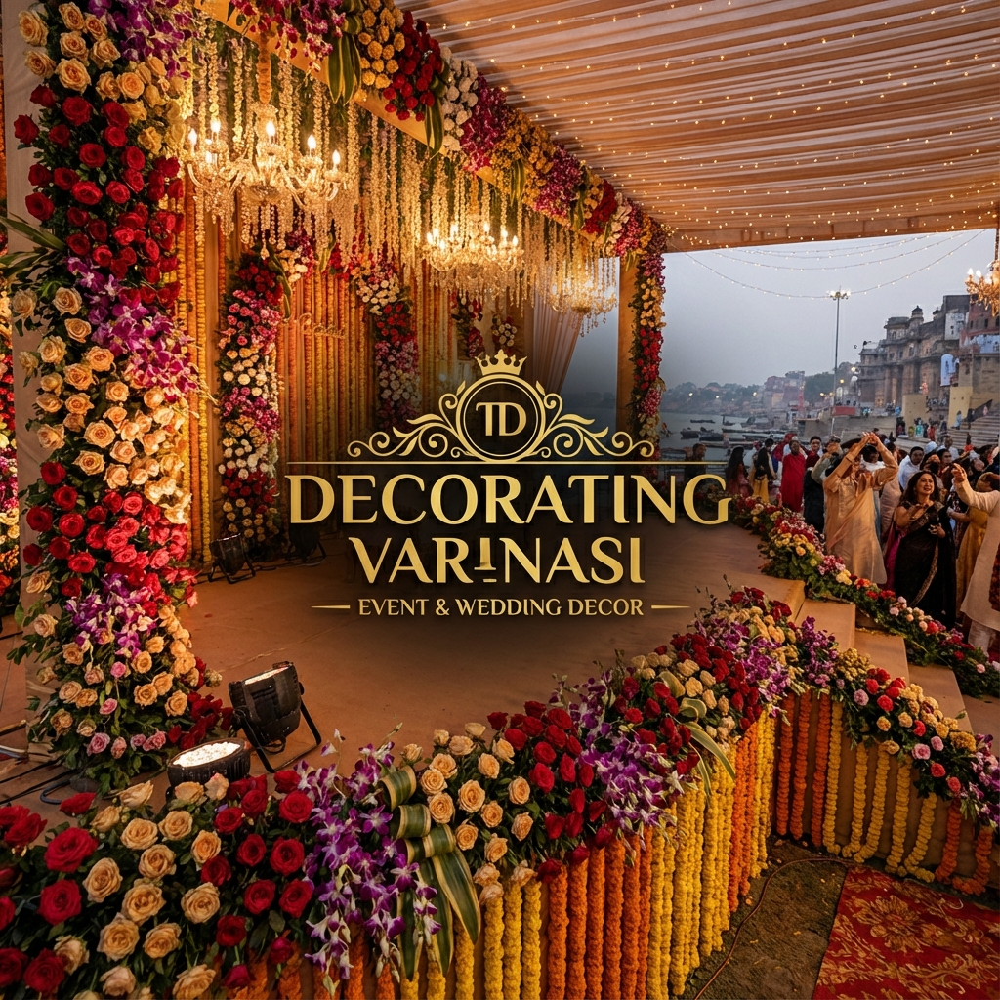

Project Overview
A dynamic Event Management website built and deployed in just 1 Day using AI. This
comprehensive web application streamlines the organization of events through a dual-interface system,
catering effectively to both administrators and end-users.
Key Features
- Rapid Development: Conceived, developed, and deployed within a single day.
- Dynamic Web App: Features real-time content updates, ensuring the latest event
information is always available.
- Admin Panel: A robust backend interface allowing full control over event listings,
detailed descriptions, and gallery images.
- User Interface: A clean, responsive front-end that allows users to browse events
and view galleries seamlessly.
← Back to Portfolio